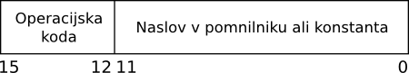

Licenca
To delo je na voljo pod pogoji slovenske licence Creative Commons 2.5:
priznanje avtorstva - nekomercialno - deljenje pod enakimi pogoji.
Celotna licenca je na voljo na spletu na naslovu http://creativecommons.org/licenses/by-nc-sa/2.5/si/. V skladu s to licenco je dovoljeno vsakemu uporabniku delo razmnoževati, distribuirati, javno priobčevati, dajati v najem in tudi predelovati, vendar samo v nekomercialne namene in ob pogoju, da navede avtorja oziroma avtorje in izdajatelja tega dela. Če uporabnik delo predela, kar pomeni, da ga spremeni, preoblikuje, prevede ali uporabi to delo v svojem delu, lahko predelavo dela ponudi na voljo le pod pogoji, ki so enaki pogojem iz te licence oziroma pod enako licenco.

Ukazi preprostega računalnika
Za potrebe naše učne enote bomo definirali preprost računalnik z von Neumannovo arhitekturo. Njegova CPE bo imela en sam 8-bitni register R0 ter aritmetično-logično enoto, ki zna seštevati in odštevati 8-bitne operande. Glavni pomnilnik bo velikosti 4096 (212) 8-bitnih pomnilniških besed. Za naslavljanje vseh pomnilniških besed bomo torej potrebovali 12 bitov. Programski števec (PC), ki hrani naslov naslednjega ukaza v pomnilniku, mora biti zato prav tako 12-biten. Računalnik bo imel vhodno-izhodni sistem, na katerega bosta priklopljena samo tipkovnica in zaslon.
CPE bo imela zelo preprost nabor ukazov naslednjega formata:

Zgornji štirje biti (biti 15 do 12 vključno) so operacijska koda, medtem ko spodnjih 12 bitov (od bita 11 do 0) določa naslov v pomnilniku ali konstanto pri takojšnjem naslavljanju. Naslova registra R0 v ukazu ne potrebujemo, saj imamo en sam register.
Operande, ki v ukazih niso izrecno navedeni (v našem primeru register R0) imenujemo implicitni operandi, medtem ko je naslov v pomnilniku v našem primeru t.i. eksplicitni operand.
Poglej v Slovar slovenskega knjižnega jezika, kaj točno pomeni impliciten in ekspliciten.
Vaja
Naš računalnik ima samo eno vhodno in izhodno enoto, pri večih bi seveda ukaza IN in OUT tudi potrebovala naslov. Predlagaj format ukaza.
Naš računalnik bo poznal 10 ukazov, ki jih opisuje spodnja tabela (na ukaz lahko klikneš in si ogledaš primer uporabe):
| Ukaz | Op. koda | Opis |
|---|---|---|
0000 |
Seštej vsebino R0 in vsebino pomnilniške besede z naslovom X ter rezultat shrani v R0. |
|
0001 |
Odštej vsebino pomnilniške besede z naslovom X od R0 ter rezultat shrani v R0. |
|
0010 |
Naloži vsebino pomnilniške besede z naslovom X v R0. |
|
0011 |
Shrani vsebino R0 v pomnilniško besedo z naslovom X. |
|
0100 |
Če je vsebina R0 enaka 0, v programski števec vpiši naslov X. |
|
0101 |
Če je vsebina R0 različna od 0, v programski števec vpiši naslov X. |
|
0110 |
Če je vsebina R0 večja od 0, v programski števec vpiši naslov X. |
|
0111 |
V programski števec vpiši naslov X. |
|
1000 |
Preberi 8-bitno kodo znaka iz tipkovnice v R0. |
|
1001 |
Zapiši 8-bitno kodo znaka v R0 na zaslon. |
|
1010 |
Prištej 12-bitno konstanto C k R0. |
|
1011 |
Odštej 12-bitno konstanto C od R0. |
|
1100 |
V R0 zapiši 0. |